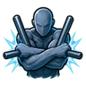
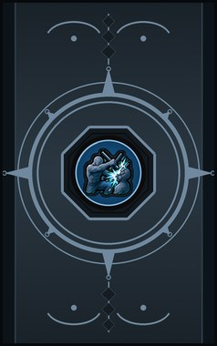
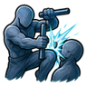
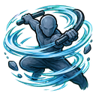
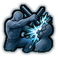

Tonfa Guard D
Lock the tonfa along the forearms for a fight. (Needs a blunt weapon, like a tonfa or club.)
| Rank | Chakra | Cooldown | Class level |
|---|---|---|---|
| D | 8 | 10 s | 2 |

Technique trees › Fighting and weapon styles
5 techniques · Taijutsu tab
Unlocks through World of Naruto's own trees, a gene, a build choice or a profession.

Lock the tonfa along the forearms for a fight. (Needs a blunt weapon, like a tonfa or club.)
| Rank | Chakra | Cooldown | Class level |
|---|---|---|---|
| D | 8 | 10 s | 2 |
Whip the tonfa round into one enemy. (Needs a blunt weapon, like a tonfa or club.)
| Rank | Chakra | Cooldown | Class level |
|---|---|---|---|
| C | 14 | 15 s | 4 |

Block, then crack one enemy across the knee. (Needs a blunt weapon, like a tonfa or club.)
| Rank | Chakra | Cooldown | Class level |
|---|---|---|---|
| C | 14 | 15 s | 6 |

Roll through everyone close, tonfa spinning. (Needs a blunt weapon, like a tonfa or club.)
| Rank | Chakra | Cooldown | Class level |
|---|---|---|---|
| B | 24 | 25 s | 9 |

A two-tonfa strike that cracks one enemy's guard wide open. (Needs a blunt weapon, like a tonfa or club.)
| Rank | Chakra | Cooldown | Class level |
|---|---|---|---|
| A | 40 | 50 s | 14 |